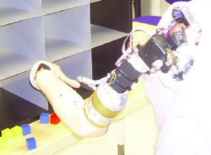

Look Ma: No (Externally-Powered, Hook-Outfitted, Prosthetic) Hands!
A mentally controlled artificial arm
Dylan Kluck
Spring 2007

Mentally controlling a prosthetic arm has always been the stuff of
science fiction – until recently. A severe amputation once entailed a
three-motor myoelectric arm that relied on electrodes attached to
remaining muscles in the socket of the amputated limb. The alternative,
a stereotypical hook prosthesis operated by tabs and levers, makes this
option seem revolutionary. But this advanced artificial arm can also be
limiting. Driven by a few muscles in the prosthetic socket, it can only
be manipulated in a sequential manner. Even the simple action of
turning pages in this journal, which requires the coordination of the
wrist, hand, and elbow, could present a problem.
Ground-breaking technological improvements in the
production of prosthetic arms, however, have created a new possibility.
A myoelectric arm is controlled by the detection and interpretation of
the electrical signals produced by residual nerve fibers in the stump
of an amputated limb. By grafting these nerve fibers to chest muscles
and consequently providing for a greater number of electrical input
sites, a new type of myoelectric arm is created. Developed by Todd
Kuiken, MD, PhD, at the Rehabilitation Institute of Chicago (RIC) and
pioneered for the case of Jesse Sullivan, this phenomenal approach in
the construction of so-called “bionic” prosthetic limbs has had
astounding results.
Five years ago, Jesse Sullivan was working as a
lineman for a power company. In May 2001, he was shocked with 7,200
volts in a power-line accident. Suffering severe electrical burns,
Sullivan awoke from a coma one month later with both of his arms
amputated at the shoulder. About two months after the accident,
Sullivan was given two standard lever-and- tab-operated hook
prostheses. Because the skin grafts covering his shoulders gave him
trouble, doctors at the RIC evaluated Sullivan as an optimal candidate
for research and performed a reinnervation surgery that redirected
nerve fibers from his left shoulder to his pectoral muscle. After six
months, the nerve fibers had grown entirely into his muscle,
essentially fooling Sullivan’s brain into thinking that his arm was
still attached to his body.
Sullivan’s bionic arm now operates through thought-
generated impulses to the amputated limb, which are transmitted to his
pectoral muscle by the reattached nerves. As the impulses are received,
a portion of his chest muscle contracts. Electrodes on the graft then
detect and amplify the electrical signals released upon contraction,
input the data into a computer in the myoelectric prosthesis, and cause
the arm to react accordingly. When Sullivan’s pectoral muscles move,
his brain interprets the electrical signals as though his elbow, wrist,
and arm were moving, allowing Sullivan to perform routine actions
simply by thinking about them. Furthermore, when Kuiken touches the
specific points on Sullivan’s chest that correspond to the reattached
nerves, rather than sensing pressure on his chest, Sullivan feels as if
the doctor is actually touching the palm or even the thumb of his
amputated limb. As Aimee E. Schultz, a mechanical engineering graduate
student working in Kuiken’s laboratory at the RIC, explains, “We have
discovered that patients who have undergone targeted reinnervation, or
nerve-transfer surgery, develop a ‘transfer sensation’ in the skin
overlying the transferred nerves. In other words, stimulation of this
skin is perceived as being applied to their missing limb.”